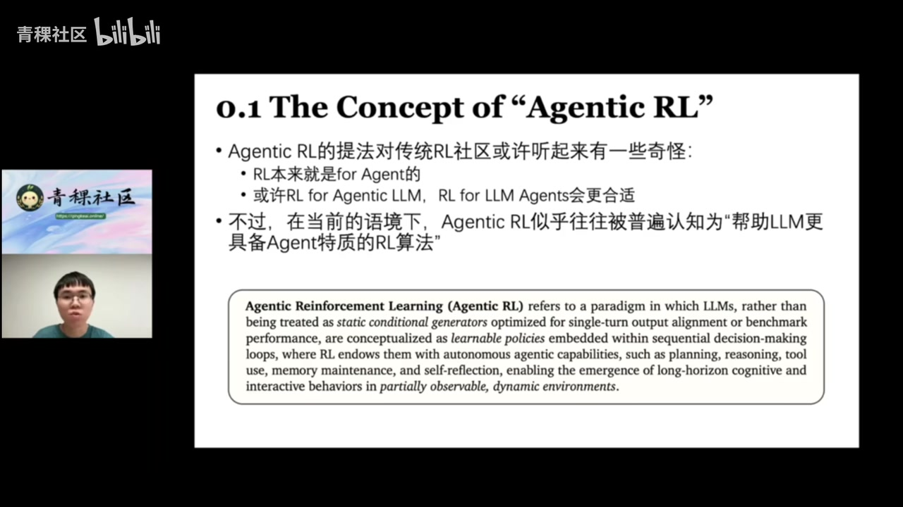
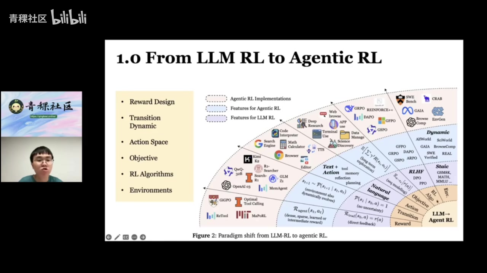
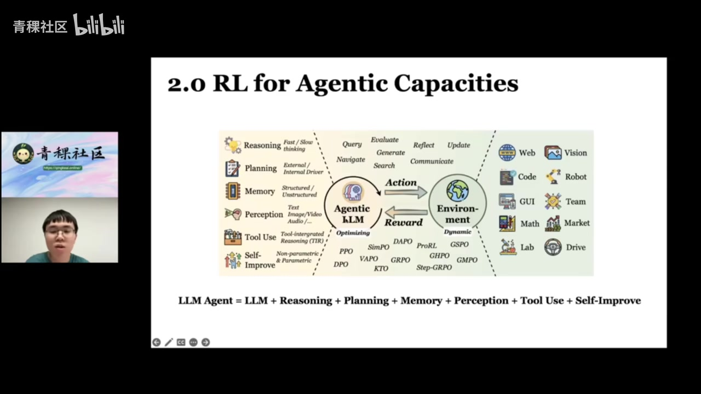
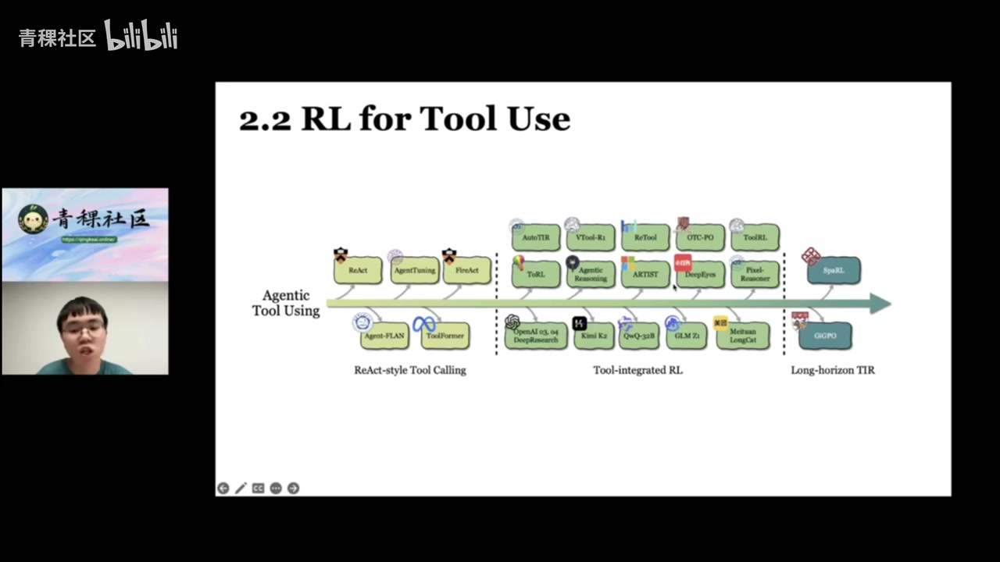
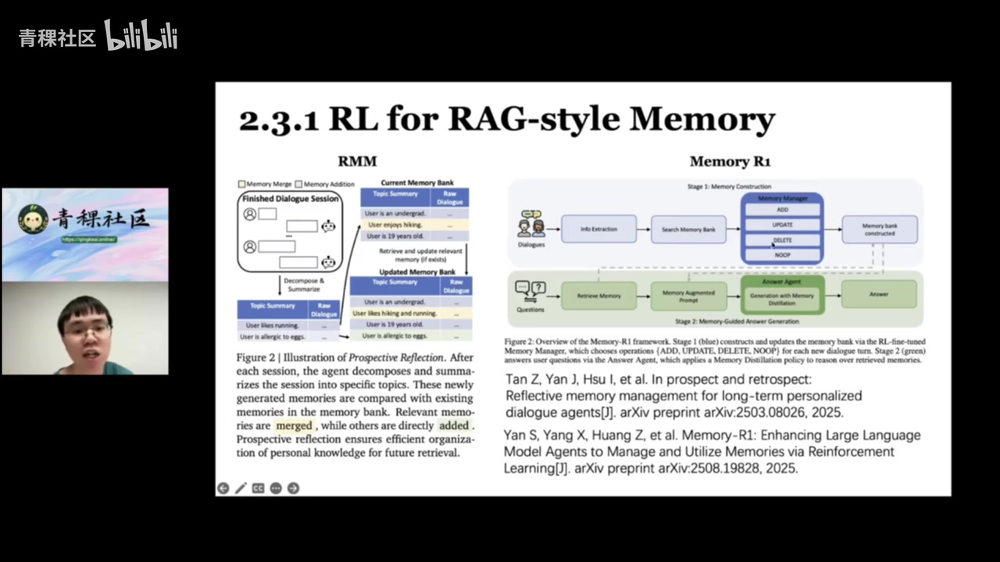
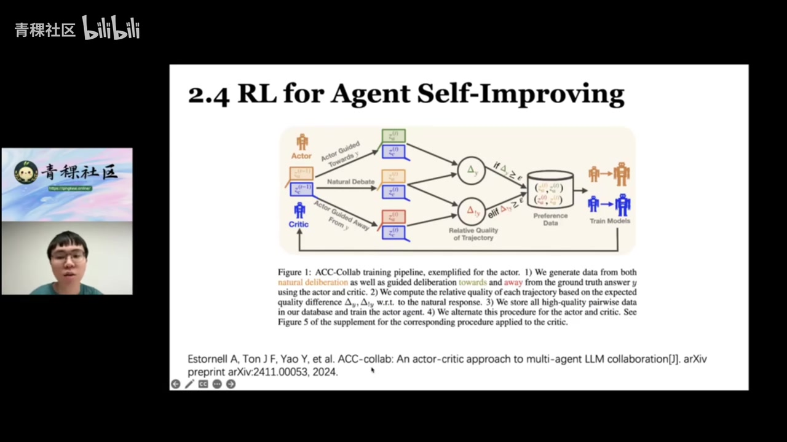
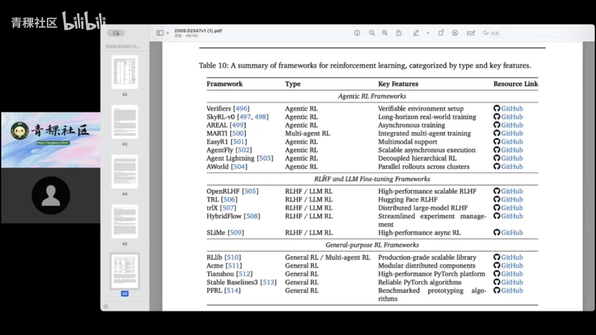

原视频讲述 · 第 1 部分
00:01Hello, 直播间的朋友们，大家周四晚上好。我是青稞社区主理人王过。欢迎大家来参加我们组织的第78期 talk。本期 talk 的话我们是邀请到新加坡国立大学博士生张贵斌来和大家聊一聊他们最新出的 genagent take rl 综述啊，也就是我们今天的主题，从大模型强化学习到 agtake rl 如何让语言模型成为自主智能体。那时间也差不多了，接下来就把直播间交给我们的张桂斌博士，您可以共享一下屏幕和开箱摄像头。好的。
01:04请问看到我屏幕吗？可以的可以的。好，谢谢大家。今天呢我想介绍一下我们团队最新出的这个关于 agent R 的综述，也就是说如何让 agent l 帮助语言模型成为自主的智能体。首先呢我想介绍一下关于 ag 这一个本身的提法。就是说嗯 agen 提法对于传统社 L 的社区的老师或者同学或许听起来会有些奇怪。对我们在写作的时候呢也接受了一些啊比如说外部合作的 comments。他们认为或许强化学习也就是本身就是用来训练 agent 的，他们本身就是一个东西，所以说没有必要说 agen 这个词，或者说可以更适合的说法是 l for agenm，或者说 for am agents 会更合适。

01:52不过呢考虑到在2025年当前的语境下，L 似乎往往被普遍认知为帮助 a 更具备 agent 特质的 R 算法。所以说最后我们也采取了这么一个题目和这么一个术语。对我们在论文里面给出了一个 agen 的, 一个嗯不太形式化的定义。我们认为它是帮助一个语言模型从 single turn output 的对齐，到从静态的 benmark 上的 single turn 到到动态环境里可以多轮对话，多轮交互的这么一个自主做智能体。我们认为这是让 agent are 的核心概念。
02:27那么具体来说，我们这篇 survey 里面主要的 focus 是什么呢？就是我们的 focus 其实只有一点，就是说强化学习，如何在动态环境中增强基于语言模型的 agent，或者说如何增强具有 agent 的特质的的能力。那么我们这在这篇 survey 里面，我们不希望研究的啊包括这三点。一是用于人类价值对齐的强化学习。比如说用于拒绝有害查询的 H F 或者说我们不不希望研究基于的传统 R 算法，比如说传统的或者说我们也不不太希望关注说嗯强化学习如何提升 M 在静态的基准测试，比如说怎么提升金色8K 或者说怎么提升 mah 500这样的 bench mark。
03:08我们认为这都不太 agent 啊，我们希望研究是动态环境以及具有 agent 特质的 M 这是我们综述的核心。然后呢我想介绍一下我们综述的这个大纲啊，或者说是目录。其实呢主要分为三个板块啊，一个是从一个是给了一个 forlation，就是说 M L 和 agl 到底有什么形式化定义上的区别。其次呢我们从两个维度来展开介绍 agrl 啊，一个是说 A L 怎么帮助不同的 agent capability。第二个是说怎么帮助 agent 在不同的 verdom 也, 就是不同的垂类上做的更好，包括 I 或或者 masearch deep 等等。
03:48然后第四个板块是 environments，也就是嗯 rl 就是因为 I 其实最最重要的一环是 environments。那么现在是哪有哪些比较成熟的 environments 可以用来训练 rl 有哪些比较成熟的框架可以帮助我们快速搭建一个 agent？对最后一块呢我们就做一些 challenges 和 future directions 展望。首先是第一节，就是说二和 agent I 它有形容形式上的区别。然后我们我们这里呢主要其实是研究了六点啊，然后可以大家可以看右下角这个图，就是说其实有六个点，分别是 reward transition dynamic 啊 action，也就是它的 action space 行动空间。

04:26objective 是它的这个训练目标，然后 rl 的算算法啊，然后最后是 environment。对，有几个比较显著的区别。比如说我们可以看这个 rl 的这么一开始，一开始可能在24年、二三年大家用 rf 用的比较多。他们可能用的是比如说 D P O O 这样算法。那么其实在2025年，在现在可能大家可能更倾向于做 L 比如说像 G 2和它的各种变体 re 加加啊等等。对然后 action space 也是一个区别很大的点，就是说传统里面这个 space 其实往往只有 natural，就它输出一段给一段 put 的输出一。
05:07对但是在 agenent l 里面呢，其实这个点会不一样。因为它可能既会输出自然语言文本，也能输出更多的 action。它会调用工具，它会做 memory 管理等等啊，然后这个其实比如说他可能调用一些搜索引擎，调用代码编译器，这其实都是 agent l 赋予 M 的新能力。那么首先第一点我们想介绍的是就是说啊这个 mardecision process 啊是不一样的。那么就是在传统的 pb t 这什么呢？这是 preference based relearning，也就是偏基于偏好的强化学习。
05:42他们的特点是这个 T 等于1，这 T 是什么呢？T 是它的这个 turn 次数，也是轮次。就是说嗯在传统的 M 对齐的 L 里面，他们其实只会对齐一次。比如说像这样啊，用户给一个指令说请你帮我写一个关于青蛙的故事。然后这个他会写一个故事，他可能会写好几个故事，然后可能会有基于一个 web 部的 reward model 给人来打分啊，打分之后的，然后他就会基于这个得到偏好，然后来更新 m policy 本身，那其实它不是特别一个嗯不是一个特别 multurn 的过程。
06:12对，但是嗯在 agr 里面他们训练的是像类似于 react agent 这样的这样的 agen 就是说 M 会和这个比如说任务开始的时候，agent 这个 M 他可能会调用外部工具或者做一些行做一些 action，然后他给自由决定是否继续行动，或者是或者说是否终结那的行动。对所以说他不是一个 turn 轮次只有一的事情，它是一个更多轮的啊更多轮的优化。然后第二点是 environment，对，其实在传统的技于偏好的 rt 里面是没有什么 environment 的这个说法的。
06:49对比如说像啊如果你要训练一个解解数学题的，比如说解 J38K 啊，解 ma 那, 其实你就是输出一次文本，然后你就 ok 然后你就解决它一次就结束了。对那其实暂时在 L 里面最重要的一环是它的环境，它需要动态的环境。所以说这也就是我们为什么把它叫做一个 P 也就是 partiobservable mark process，它是一个部分可观测的马可夫过程，而且每次的 action，每次的行动都会改变这个环境。比如说一些经典的环境，比如说啊像大家可能知道知道这个巨深的 ag 件的环境，比如说 af word 或者说 science word 等等。
07:26就是这里其实是一个模拟的文本文本世界的环境。Agent 的可能在一个屋子里行动啊，可能告诉他周围有什么东西，你可以通往哪里。然后 A 呢会决定我要捡起地上的苹果。那么 A 技在行动的本身，这个 environment 的本身也被改变了。对，这是一个比较经典的深的环境。然后呢像 web 的环境，包括像 web shop、web arena, 他们会有一些网页的，是啊可能有一些视觉的和文本的元素。然后比如说更加 real world 环境，包括大家可能最近更关注的像 ga 呀或者说 deep deep research 等等。
07:58对这这样的话他们的 evaluation 嗯都是在现实世界的环境中来进行的。对。然后第三个嗯 L 和 agtic R 的核心区别是他们的 action space。其实刚刚也有说到，就是说嗯就是说在 agentic 耳朵训练过程中啊，他们其实能调用很多的 web 部工具，比如说 web 部 api 或者 mcp 包括 best terminal ature 等等。对，这是最近的这个 two 的工作啊，他们其实能够通过这个他们的 action Ken 能够访问很多外部资源和外部世界的环境。
08:35对这是让 ag 成为 agent 的一个重要特质之一。然后第四点是这个 transsition dynamnamics 那么 pb t 其实它没有 transdynamics，它的其实 next date 是确定的，只要他的行动已经确定了。对，但是在 agen 的环境里面呢，他其实是有一定的 uncertainty 的。就是说他做完某个 action 结束之后，他其实这个环境不一定能够返回他，返回给他一个非常非常固定的结果。对比如说其实哪怕就像我们的 web search agent 一样，它如果你在2024年9月13号搜啊 G p 是什么和2025年搜 G p 是什么，得到结果是完全不一样的。
09:17然后第五点是它的 learning objective。Learning objective 这块呢嗯其实基于偏好的强化学习，他们其实就是基于某一种特定的 reward 啊，它没有没有那个最经典 discount factor 是折扣因子。但是 L 是一个更长程的更 turn 的过程，它会希望说 ok 近期的 reward 或者近期的收益是更值得获得的，远期的收益是更不值得获得的，他们会涉及到一个的设计。然后最后第六点就是常用的啊，怎么其实嗯在和是存在一些比较明显的区别的。
09:59像嗯在过往两过去两年肯大用的比较多的是和有对，然后但是在现在就是用于训练 based agent 的时候，可能大家会用 reinfor 或者 re 加加或者等等。当然呢我们也整理了很就是这三类家庭的一些比较代表性的变，就是家族和家族以及 G 家族。当然呢就是这几年的这些各类变体的工作非常非常多，我们也没有办法就是在一个表格，可能这不是一个表格，甚至不是三四页能列完的事情。所以说我们选择了一些我们认为相对来说呢可能比较代表性的这个各类变体的工作。
10:39比如说像啊有或者说等等，然后 dpu 有 k to U 啊，ipu 丢，这些都是相对来说可能使用的人数或者说使用的频次比较多的变题。对当然呢最重要的肯定大家可能关更更关心嗯 G 2 po 的各类变体，包括 dao J po g po pro l 等等。对所以说这里我就不一一列举，如果大家感兴趣的可以去看我们的文章里的这个应该是 table 2。对啊，table 1。然后从上面六个角度说了这个 M L 和 L 的这个 formulation 的区别。那其实我们现在就是这也可能是今天晚上我想主要介绍的就是说怎么帮助 agent 的提升它的各类 capability。
11:25对这里的其实一个核心图是 agent 和 environment 交互过程中，他们会给出很多的 action，然后 environment 给出他一些 reward。对，这个 action 有很多，比如说他可以做一些文本的，甚至一个自然文本。那那它可以做一些也可以做 reflection，也可以他的 memory 等等等等。它的 action 是非常大的，然后 re 方式啊其实也就是各类 L 这个比如说包括啊 R 啊等等等等。那啊 environment 是非常多要的，其实这里我们就不会详细介绍。

11:59那我们这里想给了一个公式是 agl 它是由什么组成的呢？其实这个点是其实是借鉴了啊那个 Li 练嗯在很早在2023年的时候就给出的定义。当然呢我们稍微有润色，就是我们认为 agtic 它可能啊一个 agent 或者说一个 ag 它等于什么呢？它应该等于本身 ok 这个没有问题。加上它的 reasoning 能力和 planning 能力，还有它的 memory 更新自我管理能力，还有它的 perception 以及 to use，还有 self improve。
12:32对那这几个维度，这1234五六个维度是我们认为在目前在2025年的现在对于要组装成一个 M 最重要的能力啊。那接下来其实这一节我们想说的事情就是说怎么帮助建提升这个六个方方面能力。对啊，当然这是另外一张就是概览图，就是说可以 empower agent。那从哪几个维度呢？就是从这六个维度对这后可能第三个圈里面这个同心圆里面可能有一些啊 subsection 的分类。首先呢我们会说这个 planning ok 就是说 are 怎么帮助 agent planning。
13:19这里其实我们分了两个点，一个是 L 作为一些 external guidance，就是说嗯 L 本身的参数我们不去动它，但是 L 可以帮助 L 在推理的时候更好的引导它做这个 planning。其实这里是这里其实有点像一个经典的 T T 就是说我们来了一个问题，来了一个比如说来了一个数学题，那么我们可能会分步解决它。那么我们在问题解决的第一步，我们可能有两种思考的路径。那到底选择哪种路径更有价值往下探索呢？然后我们可能通过比如说包括 m ts 或者遗传算法等等的方法，我们判断 ok 可能这条路径更有价值，然后他就继续往下蔓延。
13:56然后最后我们希望他啊可能这个树不断探索，最后能探索一个正确的答案。对，这其实就是通过一 L 比如这里的 L 其实就是比如说像蒙特蒙特考勒输搜索或者说遗传算法啊等等方法，它做一个外部的干预，来帮助 M 在 influence 的时候做到更好的解码，然后给出正确的答案。对，这是 l os external guidance。那更其实更前沿的或者说大家更关注的方法是 iOS internal driver。这个什么叫 internal driver 呢？是意思就是说怎么提升 M 本身自己做 planning 的能力，而不是通过一些外部模组来干预他。
14:33就是说我们能不能通过强化学习来训练 M 让他自己本身就做 planning 做的更好。对这其实是一个相对来说比较新的方向啊。就是说在就是其实目前的工作不是特别特别的多。对，当然呢就这里的 L 不是说传统的 L 啊，就是说这这里的是特指是 M 的 M 的 planning。对，比如这是那个腾讯他们上个月放出来一篇，就是说让通过嗯通过 rubased R 来训练这个 agent 的 planning 能力。对然后第二个大板块是 agent to agent 的 to use，然后通过 R 来嗯强化这个过程。
15:11这里其实我们分了三个发展阶段，对他可能相对来说更粗力度一些。然后这个图片也没有把所有 agent 的 to use 工作列举完。对，只列了一，就是我们认为可能相对有代表性的一些啊，当然也不也不全面。就是第我们认为第一个阶段是 react style 的 to calling，就是说这个时候其实这个其实这些工作相对早期都是二三年24年的工作。对，其实最早就是 react 啊，react 其实就是说啊就是让 agent 遵循这个 environment observation 啊，那个 observation think action，然后继续 observation think action 这样的范式迭代。
15:49他其实只是做了一个 engineering。对那然呢后面就有工作，就是想通过把这些能力给嵌入到内化到 M 里面。比如说像啊唐杰老师的，或者说啊这个 fire 或者 to former 等等。他们的他们其实范式来说是大差不差，就是没有本质的区别。都是说啊比如说这个是 agent 的 bank 这样的工作，他就是说 ok 我首先从很多个环境，从很多个数据上采集一些轨迹，这个轨迹其实就是一个经典的 react 轨迹啊，比如说 task 是什么，然后呢 thought 啊这个 thinking 我应该干什么，然后 agent 的说 action 我应该做什么事情。
16:25然后最后给环境，给他的 observation，然后他再继续这样的反复的 turn。对这其实就是这样的轨迹。那其实他们就收集很多这样的轨迹。一开始像 agent 可能只有两三千条，或者说 agent plan 可能就啊不到1万条，不到10啊。但是呢可能后面这个数据就越做越大。比如说像 agent bank 就做了5万条这样的 re 轨迹。对啊，这是一个比如说其实就是说从一个的 based 啊 to use 到后面的 based 啊 to use，就是他们都能够通过这样的数据数据这样的啊 offline 的来让 agent 更好的做到这个 to use。
17:02对。然后第二阶段其实也就是今年开始的啊，其实就是这个啊 to integrated rl 对这这一块呢其实嗯在我记得在3 4月份的时候，有非常非常多的工作涌现出来。就是其实就是像这里面，比如说包括这个 to tir 啊，然后呢啊 deep eyes 啊、to R L 字节的，还有这个像这个 agreasoning 啊 L 等等等，这些工作太多了。就是我觉得可能至少有三四十篇、四五十篇，他们其实都是在就是正常的 g pu 训练过程中加了一个 to roout，就是说让 agent 可以自己自由的定义什么时候啊自己自由的定义什么时候唤醒工具，工具的参数填什么。
原视频讲述 · 第 2 部分
17:53对这都是通过 L 的 to n 的训练的啊，这个范式其实已经得到了非常非常广泛的认可啊，导致现在呢他已经成为各类模型一个非常基础的能力啊。这个能力其实在包括 Q W Q 啊或者 kk 2，质谱的 Z 1，或者说美团的啊，或者还有质谱的4.5，还有美美团的 long 这些这些模型里面其实都成了成为了一个相对来说比较基础的能力。对就是所谓的 to integrated 的 rl 对所以说这已经是发展的一个比较完善的阶段。

18:25那下一个阶段其实就是我们的 survey 里面呢，我们认为下一个阶段哦等一下就是在上一个阶段，其实就是这我们刚刚举的例子其实都是这个文本模态的那其实在各各类其他模态，比如说图片模态，还有这个 G I 模态等等，这个范式也已经发展的非常非常成熟啊。比如说包括这个是 deep ice，就是说啊我们的 vm 在推理的时候呢，它能不能够调用自由调用工具呢？比如说我能不能够做一些辅助线，或者说做一个裁剪旋转等等，这个都是通过 n to n 的 L 来训练的，让 A 呢具备在各个垂类的模态啊，都能够通过来学习怎么使用 A 阵啊，怎么使用 to 啊这样能力。
19:07对那其实我们认为下一个阶段应该是 multurn to R L 对那其实大家可能就会有人问说，哎，那现在不都不是都是 multurn 嘛？对，其实现在的话的确有很多工作是做 multurn 这个方面。就是这里的 multurn 可能要和大家区别一下什么叫 multurn multurn。比如说这里的 input 一次到 answer，然后它中间可能有一次有一些 to invocation，这不叫 multurn，它只是在一次 out 的时候，它可能有很多的工具调用。
19:40但是它本身还只是只是一轮的定。对，它本身并不是一个多轮的，它并不是像之前的 re 一样到了环境反就它并不是就是在我们定义里面，它并不是一个的这个所以说更更加应该是像这样的，可能会反复的很多次，就是这里的 A 一它可能就包括了我们刚刚描述的很多的工调用的这个过程。对，就是当然所以说这么这样的 R 里面呢，其实问题就变得更难。因为现在的主流范式都是 outcome base reward。那那那其实具体到每一个细密度的动作，比如说调用了一个搜索引擎，或者说调用了一个网页爬取的工具等等。
20:25那其实很难获得这么细密度的错误或者成功的归因。对所以说哪怕其实现在有一些工作，包括 spair 或者说 G I pu，他们有一些已经开始在尝试做这样的非常 multurn 的这样的啊 G 2 training。但是我们认为这依然就是在比如说可能在未来半年，依然是一个比较核心的值得探索的主流方向。然后第三块啊，我们刚刚说的这个啊 L 怎么提升 agent 的 planning 能力，L 怎么提升 agent 的 to use 能力。然后第三块呢是 L 怎么提升 agent 的 memory 能力。
21:00对其实在写这一块的时候，我们有发现就是说 L 和 agent 的 memory 结合，这是一个相对来说工作更少一些的领域。但是呢每篇工作我们发现都相对来说很受关注。对，就是我们这一个表格里面其实并不是所有方法都是和强化学习结合的。但是呢我们是对现在的 memory 方法做了一个比相对来说比较简洁的分类。第一个分类我们认为是一个 rstyle memory。什么叫 restyle memory 呢？这里的 memory 其实是说它是以一个外部数据库的形式储存的。
21:32比如说像这个 memory bank，或者说像它是一个外部向量数据库的形式储存的。像这个 hipper g 它是以一个知识图谱的形式储存的。对，就我们认为这样的，他们他们这些嗯比如说 agent 可能会见到很多很多新的信息，那这个新息它不是更新到模型内部，而是存在一个外部数据库里。对那存在这个外部数据库里啊，他可能在需要的时候就通过一些基于这样的方式来提取出来。对那这个过程中怎么参与呢？这里我们找了两篇，我们个人觉得比较有代表的工作。一个是 proect memory，也就是 R M M 啊，一个是 memory R Y 这个 rm m 他们其实这个 R L 用的非常非常简单啊，他们做的非常简单。
22:15他们他们其实说这里是说就是 rl 在其中参与部分比较简单。这里这里就是说我们比如说用这个 agent 在和用户对话的过程中，ok 然后这个时候可能用用户提了一个问题，这个时候 agent 需要 retrieve 外部的 memory 啊，可能从外部的这个比如说记忆表里面提取一些信息。那提取到些比如说他可能提取到 to p 10或者说 to p 20条信息。那很显然这20条信息并不都是对当前问题有帮助的对这是个很直接的事情。对那那到底哪些信息可能对当前的问题解答最有帮助？
22:50所以说他们基于这个训练一个最简单的 ranker 啊，他们做了这么一个事情，对这是一个比较相对来说简单一点的 rl for rack memory。那其实最近呢大家可能也看到，就是说像这个 memory R one，对在今年这个八月份终于姗姗来迟啊，姗他就是终于终于上线，在啊 G 2P 又出现了大半年以后，对那其实他做的一个事情是什么呢？就是说像左边这个 R 他们做的事情是他们有个缺点，就是他们大部分流程都不是 agtic，而是人工手手动写死的。比如说来了一个问题之后，那么他们就会手动的。
23:30比如他们就会决定 ok 我们要选择一些我们要选择一些关键词，把它喂给这个 R 数据库，然这个数据库做一些向量像素检索，把这些结果返回出来。对那其实在每一个步骤都需要做这样的向量像素检索嘛。其实不一定。所以说 memory R 一是其实是相当于让这个过程更加的自动化，更加自主。就是他们训练了一个 memory 管理的模型，他们可以自由的决定什么时候搜索 memory bank。他们可以那需要更新的时候，到底是添加还是更新，还是 delete 还是 Nope 等等。

24:03所以说他们训练这样的一个 memory 的模型，他们能够自主的选择什么时候调用什么样的 memory 接口。对所以说这是一个相对于 R M 来说更加的嗯更加自动的这么一个过程。当然嗯他们的他们的缺陷或者说也不算缺陷，他们的特点就是说 memory 本身不是内化到模型里面去的，而是维护在一个外部的各种图数据库者或者现在数据库里面的那那其实第二我们要讨论的第二类其实就是所谓的 token level memory。对这里这里有两篇都非常最近非常受关注的工作，一个是啊字节的 agent，一个是昨天啊相。
24:43大家也可能都有关注到，就是嗯通义放出来欺骗工作里面的一篇叫做 web resu 嗯, 就是 resu 对他们其实做的事情是就是说比如说像 agent 他做的事情是解决的是一个 long context 问题。就是他们认为如果一个很常文本的信息直接塞给一个 am 他解决不了。那么我们就可以把它分 chunk 或者说做是说是切片。我们能够把切片，比如说第一个切片位给，那么它会维护自己的一个 memory 池，这个 memory 是一个自然语文本。然后第二个 chunk 位进来，它会根据第二个 unk 的信息来更新第二个文本记忆值。
25:20然后第三个更新第三次，然后最后更来到第 N 个之后，他会给出最后的答案。对，这是一个 inside trial 的这个 memory。对然后这是解决的这个问题是这个成文本的问题。对然后 resu 解决问题其实是在多轮对话的这个在多轮交互的过程中，agent 它获得的信息往往会过长。其实如果大家其实可能在训练一些校息 agent 的时候，可能都会有感觉。就是说 agent agent 它会使用 to，对，这没问题。他收他的 to 返回的结果往往会非常非常的长。
25:58比如说可能用一个网页爬取的这个 fire 的工具，然后把一个贴子上面那种爬下来，或者把一个论文里面那种爬下来。那他可能返回头可能能有五千甚1万个 token。那内容太长的话，就会导致这个 agent 的 context limit 爆炸。而且越到后就是 context 越长，越到后面，它的效果效率其实越来越低的。所以说 resu 做了这么一个事情，他他们用了一个 summary，就是每轮交互之后，他们都会把这一轮交互的 so information 总结一下，然后为给下一轮，那么之前的之前这一轮对话的全部信息就被丢弃了。
26:32他只会维持一个最有嗯最后面的问题最有帮助的这么一个 suminformation。对，这是这个事情嗯，其实做了相当于说做了一个多轮对话的 con 啊.这个事情其实是很有意义的，也是嗯在多轮真实世界的 A 镜训练中，一个我认为一个非常非常关键的技术。对所以说在这样的场景下，他们为什么被叫做 token level memory 呢？所说他们他们的 memory 就不是存在一个外部数据库里面的，而是这个 memory 是通过 A 的自身自己管理维护一个自然语言可读的文本来储存。
27:06当然呢其实我们也讨论了就是说 latent memory，就是说这个 memory 其实本身没有必要是自然语言可读的。像这里它是总结出来一个一些 intial information，对那其实这个 information 它一定要人类可读吗？它可不可以是一些黑灯 states 呢？这其实我们团队呢也在做嗯相关的一些探索啊，最近可能最近呢会有一篇就是 latent token level memory 的工作。然后第三点就是说 I for structure memory。
27:34对 strucmemory 意思就是说我们不不是在用什么现在数据库啊这样的或者说那些这样的 rack system。我们而是我们用一个更加结构化的，比如说图数据库，或者说这样的层次图数据库来管理。对这是我们之前做的一篇工作，叫做基 memory。对当然呢这里面其实是没有任何的元素的。我们认为通过 L 训练一个类似于 memory R one 这样的 agent 来管理结构化的记忆。我们认为是一个未来。比如说短期内可能会说关注的点，对，这是我们的一个展望。然后第四块，刚刚我们说了 agent agent I 怎么帮助这个他做更好的 planning，做 to use，做 memory。
28:15对然后第四个这里呢是这个 agent self improving。We please make sure that you take all your personal ongings with you when you leave your attention.Please, we will be closing the library in half an hours time.Please make sure that you take all your personal belongings with you when you leave.。
28:37Thank you.Ok 嗯，然后第四块是我们想说的是这个 I for agent 的 self improving。对啊，这个点呢其实说嗯其实就是说我们认为 agent l 可以让 agent 的自我提升。那么怎么自我提升呢？我们认为有三个大致的方向啊，一个是 variable self correc 这, 其实就是包括 reflection 或者说 self debu 这类的工作。就是 agent 给出了一个答案之后，他怎么自我更新自己，让自己的答案变得更好。
29:07对这其实就是一个所谓的口头强化学习。对它其实并不涉及对模型本身的参数的更新。然后第二类是 internalizing self correction，就是说这里其实就会动模型的参数了。就是说嗯我们认为 agent 它可能本身并不存在非常非常优秀的自我，那我们怎么通过 L 来训练它，让他做到怎么给自己纠错，或者说给别人纠错。那么第三点是所谓的这个 iterative training，就是说这个其实是目前来说很受也是很受关注的一点。就是怎么让 agent 自己造数据，或者在零数据或者少数据的情况下，怎么自己造数据，自己训练自己。
29:46对那 verbal self 呢这个其实不太，因为它只是一个 verbal。对我们这里会首先说这个 interalizing self，就是通过内化 agent 的自我更新能力。像这个 acc collab 啊，这是一个相对来说比较早的工作。他们其实训练了一个结构，叫做 actor creative 结构。那么什么叫 actor creative 结构呢？他们就是说一个问题来了之后，critic 啊 actor 会给出一个行动，比如说给出一个答案，然后 critic 会批评他。

30:17那么这两个他们这是一个合作模式，那么怎么让这个合作模式变得更好呢？对，这是这其实就是他们这个工作想研究的问题。他们这个工作会他们这个工作首先让 actor 给出答案，然后让 critic 进行批评。那么这两个 actor 和 critic 他们怎么获得 reward 呢？其实就是说 actor 的答案做对了，那肯定就会获得 reward。Critic 如果让 actor 由错转对，那么也会获得 reward。但在这样情况他们就会 ac 能力，解题能力就会越来越强，critic 批评的能力就会越来越强。
30:49但他们嗯通过这样训练，他们就会做的越来越好。对，这篇工作是通过 dpu 来训的，然后这是我们最近的一篇工作。这篇工作其实是针对 d presearch 的场景来做的。就是说其实大家肯定在用真正的一些 d presearch 产品的时候，会遇到这样的情况。就是说这个他们解决了很多很多轮，比如说十五轮、30轮，但是最后做错了，做错了之后他们可能会怎么做？他们可能会从头开始。那从头开始他怎么他能利用好之前的这个失败的轨迹吗？能给予经验吗？其实一般来说不能，为什么？
31:20因为他太长了。就是比如说这里可能是一个20步或者30步的轨迹，其实让如果让 a ent 的自己来反思到底哪一步做错了，其实他可能很难找到。就是 A 可能是这一步搜索错了，或者说这一步嗯爬取错了。对他因为这个轨迹太长了，所以说嗯现在的 M 可能很显有具备这样能力。所以说我们专门训练了一个所谓的啊 a ent 的 traser 啊，traser 的意思就是说我们希望找到一个在 m agent system 里面嗯注入错误的那么一个 agent。对，我们希望找到到底是哪一步导致他错了。
31:53好，那那具体来说我们其实只训练一个8B 的模型，叫做 agent 的 tra 8b 然后我们获得的效果其实非常非常惊人，就是这个 step level 是么？Step level 就是说他能否找出到底是 agent 哪一步执行错误，导致整个系统全盘崩溃。我们发现哎现在基本上大部分存在的包括 g 4.11，基本的2.5 pro 还有 cross 4 net 等等等等。他们在找出哪一步导致系统错误的这个过程上，他们性能很糟糕啊，比如说像 g 4.1只有3.44%准确率，哪怕四它也只有18.97%的准确率。
32:29但是我们在通过专门的数据数据并且微调之后呢，我们的8B 的模型能够到达比如说20%的 step 准确率。或者说甚至有的时候甚至是57.63%的 step 准确率啊，能够甩比如说甩 g p 4.1啊，20到30个点。对然后而且这个训练是个非常非常小数据的情况，就是我们只只只采了2.5K 到3000的数据，3K 的数据来训练这么一个8比 agent。对然后他那么他这个事情跟 self improving 有什么关系呢？其实我们认为他的意义就在于我们的一个 deep research system，或者我们的一个 agensystem。
33:05他们在执行失败一次之后，他们显能自我改进。他们很少能够利用历史的错误信息来让自己这一次做的更好。那我们比如说我们就是说让一个现成的，比如说 W 这个 system 他们在解决一个问题，ok 他解决错了，那他错了之后，我们就让这个 agent 的来把当前的这个失败轨迹给 take，然后他就会给出一个错误的诊断。比如说这也步错了，他为什么错了，应该怎么改啊？然后就把这个信息为给第二轮解决开头，就告诉他哎，这是一些之前的可能的错误信息，请你参考。那么这样一个模型，它就能够让一个 deeper research system，他们能够在解决这个问题的过程中，比如说 try one、try two、try three.。
33:47解的越来越好，改的越来越好。对那其实相对来说一些之前的方法，一些基于 prompt engineering 的自我改进的方法就做的没那么好。比如说像 self refine 和 critic 啊 critic 甚至有的时候反而会导致性能急速下降。对我们认为这是一个非常 promise 的方向，也是一个 scal 的方向。然后讲完了这个 internalizing self improving 之后呢，a self correction 之后呢，其实我们第二个是第三个板块是这个 self play 啊 self play 其实这个就要说的一个最近嗯之前很受关注的工作叫做 absolute zero。
34:22它这里的卖点是它的是一个绝对的 zero data，就是零数据。那么他们其实就是说让 agent 在环境中自己提问题，自己给出这个训练目标，然后自己优化自己。对那这是一个其实是一个非常非常经典的 self ving 的流程。然后这是这是一个 single agent 的对然后一个这是这个叫做 map rl 它是一个 mulagent l training 的 pel 他们其实其实在这个 agent 的场景。然后他们相互的然后在这个过程中呢，他们这个算法会激励 agent 自己选择什么时候啊嗯在自己选择什么时候和别的 agent 做消息传递或者说做合作。
35:04对那么其实他们发现的结果就是说这样这样的嗯 agent 合作一起来做的效果能够比更好。然后后面的板块呢就是说这个 io for reasoning and perception，对，2 for training and perception。这里我就是不非常非常详细的介绍啊。因为 reasoning 有已经有一些非常非常好的综述，所以说我们其实只是从 fast reasoning 和 slow reason 角度做了一个比较简单的辨析。然后 perception 这块其实就是说怎么让我们之前讨论大部分都是文本模态，怎么让一个基于语言训练出的获得更加的更多模态的 perception 能力。
原视频讲述 · 第 3 部分
35:49比如说包括 image，包括 video，包括 audio 等等啊，这里我们也做了一些列举和探索。然后最后最后我们其实讨论了一些 multurn 的 training。对，这个其实不是一个 basic agent 的 capability。但是我们也是认为也是很重要的，我们没有对他们做一个特别的 tax 的归类，因为这个领域还是一个非常非常新的领域。就在我们这个 survey 刚出来半个月不到啊，已经出现了又有很多新的 multurn 的工作。我们根本来不及收理，当然我们也在尽力的理中。
36:19比如说包括统一的 web，包括 se 的这个 agent R L，包括 U 包括 deep 等等，这工作都是非常前的关于 turn 的探索。我们也希望能够在我们的论文的里面把这些论文都加进去，然后进一步讨论一下。对当然呢我个人认为 turn training turn 目前的范式还是在一个高速发展阶段对。然后嗯稍等，然后最后一个版，然后下一个下一节呢是这个 ifor vertical doma 就是说 I 怎么帮助在各个垂类领域做的更好。这里的其其实啊这里的话我就直接用这个论文的 p df 来讲了，嗯嗯，稍等。
37:18Ok 嗯这个屏幕应该可以看到。就是这一节呢主要是讲的是这个嗯 I 有怎么帮助一些多 ain specific agents，包括我们讨论一些多 ain，包括这个 search and and deeper search，然后包括 coding mah I 啊 ti agent 等等。对，这里 mulagent 其实稍微有一点点突兀，因为它并不是一个特定的任务垂类领域，对，它并不是一个特定的。但是呢相对来说呢我们啊因为 mulag 的工作相对来说没有那么多，所以我们也把它列在这一节。
37:54对然后首先是这个 search and research agent，对这其实就是我们初步列了一些工作，包括一些早期的，就是今年可能4 5月份的这个 re re 加加 research 啊等等等等啊，这工作太多了，就是很难在一个表格里面没完。对，然后这些工作其实都是在第一出来早期的一些非常早的探索。他们都是通过把一些嗯这个搜索的引擎，或者说一些网页网页工具给融入到这个的过程中去。然后他们的一个分类是他们的这个搜索引擎都是 external 的，他们都是和外部真实的世界引擎交互。
38:33那么最近有一些工作，他们在探索怎么能够能不能够大模型自己来搜索自己，比如说包括 zero 和 S L 对，这是一些很新的工作，大家如果有兴趣的话可以去看他们论文关注。对，然后这是都是一些 open source 的 methods。他们呢他们他们特点就是说他们训练的模型没有特别的大，就是其中一万基本上都是7B 或者说78B 的模型。有的可能就是最大的话也就是嗯 QWQ32B 或者说千万2.5 32的模型。对然后那其实更加 close source 的模型包括啊像 perplexity、open eye 啊、Genine 啊、resear 等等，他们可能就是用的一些更更具巨型的模型，包括2 300B 的模型。
39:11对嗯然后其实最近华为也出了一个专门嗯讨论 I 怎么帮助 deep research 的这个 survey 啊。对对这个 survey 呢也相对来说会比在 deep 这个层次会比我们更加全面一些。对，如果大家感兴趣的话可以去专门关注一下。然后这是第一小节，第一个我们要讨论第一个 domain 是这个 search and deep research。然后 coding agent 的这块呢，我们其实主要是分了3块3块一个是最简单的这个 code generation，对 cogeneration 他们刷的 benmark 可能相对来说会在现在来看会更简单一些。
39:49比如说包括这个 human evil 肯定就已经被抛弃了。比如说包括 code code 啊 live code benben 等等，就比如说这些更难的一些定 benmark benmark 对，然后他们有既有用这个 outcome reward R L 的，也有这个 process reward I 的。对 ok。哦，这个提问区的这个互动区的评论，我就嗯待会儿一起讲完之后再来这个解答。对，然后这是第一块，就是说在 coding 这块呢，我们认为第一个板块是4.2.1是这个 rl for cogeneration。
40:28然后4.2.2就是说 rfor 啊 iterative code refinement，对，这个是做的什么事情呢？这个其实就是说这个刷 benmark 其实就会更难一些，就是最经典就是 S 啊，S 其实就是做这个 GitHub 的这个 code re 对.那其实他们总的来说也可以分成 outcome base reward 和这个 process base reward。对然后第三个板块我们认为是这个 for software，对他们说的 benchmark 他们说的 benchmark 就像这里就是比如说一些经典的工作，包括这个 deep sw 像 sw l 对 L L coder 啊，他们其实嗯所以说这 L 这三个板块呢其实各有难度。
41:12就是首先我觉得目前来看最简单的肯定是 cogeneration 这个难这个板块。对，然后现在大家最关注的肯定是 sw 啊，因为 sw 是一个在 coding 非常受认可非常受关注的本 mark。对，然后就是这个 iterative，然后在嗯嗯在这个 mathematical agent 这块，我们其实分的这个类呢会相对来说独特一些。就是我们首先分的一个类叫做 I for mathematical reasoning。它的特点为什么叫做 informal 呢？
41:42代表着它的 reasoning 和 expression 是用 natural language 来表达的，就是他们是用自然语言来处理的。比如说像啊 market 那的问题，我告诉他哎啊告诉他一个小学级别或者说博士级别的数学问题。但这个数学问题本身是用自然语言或者说一些 text 语法来表达的，它并不是依赖于某一种特定的，比如说另那样的啊那样的证定理证明语言。对，然后这是4.23.1啊。对，但但然这里的我们的分法同样是基于 process reward 和 outreward 来分的对然后第二第二个大块我们就认为是所谓的和 infor 相, 对，是一个所谓的 formathematical reasoning。
42:25对比如说包括这个嗯他们其实更注重的领域是这个 the 或者 lemma 或者 proposition 啊这样的定理证明。对嗯然后 ok 对，这是一个对，是我要想给的这么一个表。就是其实这两块的工作其实是相对来说是非常非常不重合，就是 overlap 是非常小的。像 informal mathematical reasoning，它其实是在那时间大家的比较多。因为像 zero T R 或者说 T R L 他们其实都是只是采用了数学这个数据集而已。就是并不代表他们的数学推理一定他们的推理这个能力一定要在限定在数学这个领域。
43:06只不过数学这个领域会更加严格，他的 reorder 会更加精准而已。对，就是他们其实只是嗯可以这么理解，就是说他们只是恰巧使用了数学这个数据集而已。对，但是像 ifor formal mathematical reasoning 的话，他就会稍微不一样一点。就是像比如说像 deep deep prover 啊，或者说像这个他们是专门做定理证明的啊，还有包括这个 interm 对，所以说这两块的工作他们的重合是相对来说比较少的。对，大家在在在看相关的工作时候可以记得区分一下。
43:37对，然后像这个 joi agent agent 我们其实这一这个表格呢其实它列的并不是非常的 I 就是我们这里首先给了一些 I free 的这个 gagents，对，包括像这个啊 c navigator，他们其实本身并没有太多的特质，他们就是一个的 v 对.那那他们其实只是通过 ok 这个告诉说你可以怎么怎么做，你可以你可以就是你你可以点击什么什么东西来来做，对它其实本质会更加的一点。对，那那其实后面呢大大家可能就会做一些把这个访问能力给内内，比如说包括包括 I 等等。
44:19对那其实我们更更想看的是就是这个包括 I one 啊，ur one 等等。对这些工作他们其实有两个区别，一个区别是他们的训练环境啊，包括就是他们的这个训练，他们的这个 agent 的行动本身到底会不会改变这个环境。对像 gr 1或者 ur 一它的环境是更加 static 的。那像 webagent 的 R one 或者说 U 或者 uv 2，他们的是更加 interactive 的。Interactive 意思是你比如说我们可能点进点进去一个网页，然后我们点进去然后返回之后，他可能网页的内容和之前就不再不相对来说变化了。
44:59就是它不是一个 istic 的环境对。然后我们对于这个微信这块的嗯这这个没有特别特别详细的探索。我们只是在这个微信这块做了这个 image test 和这个 video text 区分。对，因为嗯这个其实麦克秀老师组里面有一篇更详细的 I for 的工作。对所以说我们就是像这个就应该就这篇就是这个357应用这一篇。对，如果大家感兴趣的话，可以去看这一篇更详细的介绍。对，我们这里的话只是做了嗯这个 image task video 和31个大概的介绍。对 embody emboagents 我们直接嗯主要是分两块，一个是分 vision language action model 的 navigation agent 和 vision language action manipulation agent。
45:51对。然后最后的话其实是这个 l in multi agent systems，而 in ti system 其实是一个很新的话题，就是说可能做的人并不是非常非常的多啊。那这里的话我们给了一个表格，其实他就分两，一是 l free mulsystems，就是可能一开始的比如说24年的一些 agent，他们可能大家会会被人诟病，就是他们相对来说会可能会更加的这个 prompt engine 一点。他其实 prompt agent 的说你是一个 engineer，你是一个的，你要做什么事情这样分工。
46:25对，比如说像 cao 或者 gt 啊 M 等等等等等，他们本质都并不涉及对 agent 的本身能力的参数的更新或者能力的训练。对那其实后面呢就会有一些 rl based mulagent 的 training。对这开头三篇呢啊比如说像这个是我们之前的的工作啊，这个是 Mar 或者说这是这是那个这是这篇204的工，这是啊这个做的是 agent 训练，他们这个特点是这三篇特点是他们不也不会训练 agent 本身，他们没有更新 agent 参数。就是大家可以看到这个 train 这一列都是叉啊，他们没有更 agent 本身。
47:06那为什么它是一个 rl based multi training 呢？因为他们训练的是其他的外部组件。比如说 gp 算训练的是 A 之间的临接矩阵，他们去训练 a ent 之间谁应该连接啊，这是一个外部可训练组件，但 A 的本身并没有被更新。像 Mar 它训练的是一个 super agsupernet，就是说这个 agsupernet 是一个参数化的嗯 N 网络啊，一个一个比较传统 deep n 对它并没有对它这个 deep 这个外部的 supernet 嗯，它是用来操控什么时候唤醒什么模型的对，但它并没有训练进本身，所以说真正开始训练进本身的是后面这些方法，包括这个 T 啊，包括说过这个 R L 等等，他们的用的方法也也各有区别，比如说包括啊二等等。
47:56对像嗯这个 ma 他们训练的这个目标也各有区别。比如说 malt 会训练这个 multi agent system 的所有 agent。对然后比如但是这个包括这个 flow 啊，或者说像这个 flow reer 他训练只有一个 meta agent。他只会训练一个中央的 ag 来调控其他 agent，而其他 agent 本身是不变的。对，这是然后自节的这个 Mao 也做的是类似的事情对。稍等，我可能需要切换一下这个环境。其实就是说刚刚说的事情是像 malt 开始这一系列工作，他们就会训练这个 A 镜的参数本身。
48:37但是到底训练哪些 agent 是这些工作的差异。比如说我刚刚说的这个 mapo 啊，这个是自己自己的工作。还有这个的他们其实不会训练所有的 agent，他们只会训练一部分 agent。比如说像 flow 的训练的是一个 meta agent。对然后 malt 和这个 acc lab，他们其实就是会训练这个 multi agcies 面所有 agent。对那其实大家可能听着这个训练所有 multi agent 里面的这个 agent，他可能听起来还蛮多的。那其实并不是很多，因为像里面它其实只有三个 agent，然后像这个里面它只有一个 actor 和一个 cri 两个 agent。
49:20对所以说其实大规模的 ag 训练现在仍是一个相对来说比较难的问题。对相相相应的框架也不是一个非常成熟的状态。所以说这其实啊 ag 的依然是一个相对来说相对来说就是 four 的 L 目前是一个比较新，而且是探索的 topic 对。然后我们还给了一些其他的 task，比如说这个啊 game 啊，包括这个 table，或者说 time series，或者 general qv 和 social agent 等等，对这些工作也很重要。但是相对来说他们的嗯 paper 没有那么多，所以说我们也没有成体的。
49:58然后最后的话这个 section 是这个 environment and frameworks 这一节其实就是说啊我们大家可能会共识的一个点，就是说 L 是那个 environment 是 L 一个很重要的点。对那么现在有什么 environment 呢？其实我们这里呢给了一个相对来说还不还算挺全的列表啊，这里的话。像这里的第二行第二大行，它是这个一些 web 部的环境，包括它的 web shop，还有 web arena 啊，app app word 等等，它都是一些视觉的这个啊或者 gui 的 environment。
50:34对这些他们的特点就是我们的这些 environment 特点，就是他们为什么能够叫做 environment？是因为啊这些 environment 本身是 interactive 或者说动态的，它不像传统的做 mark，比如说包括或者说像什么这样 mark 他们其实只有一个进来，然后你做。但是这些 environment 不是这样的，就是这 environment 特点就是他们会因为的 agent 的 action 而改变。这是我们认为把 dynamic 的 environment 和静态的 mark 区别的开来的事情。
51:13对然后包括这是一些相对来和和这个 W 比较相关的，比如说还有 agent 等等。对然后还有最经的像 W 和 re 啊还有等等。对这是然后这个列表呢相对来说啊并不一定非常非常全。但是它的想体现我们的主张就是说我们认为一个啊 for 一个 dynamic 的 interactive 环境是很重要的事情。然后最后的话我们还列了一些比较嗯比较重要的 agentic or framework。对这里其实我们给了三类。当然呢就是现在这个论文的版本，就是这个是我们的 version one，并不是非常非常全。
51:53就是我们在这个 version one 挂出来之后呢，就啊朋友联系我们说 ok 这里可能有一些缺失的这个 agent framework，比如说像 slime 等等。对所以说如果大家有看到嗯自己或者说别人的比较嗯相关的 agent framework，也随时可以有效联系我们，把它添加到新的论文里面去啊。比如说我们这里区分了三块，一个是这个 framework，这个 agenframework，比如说包括像啊那个清华那个蚂蚁的 area，或者说清华的 Martin，还有 agent agent fly，还有微软的 agent lightning 等等，都是最近比较新的，就是专门针对 agr 的框架。

52:31然后下面两个呢和目前的关系没那么大，就是一个是 F 的 frame 包括 open f 啊，然后还有一些 general frame 包括这个 L 等等。对，当然呢我们认为最重要的是这个啊，还有当然也包括一些最包括 T L 等等。然后最后的最后呢，其实我们给了认为了三个有三个比较重要的这个 open challenges 和 future direction。对第一个点是这个 trustworness trustworess 其实就是我们讨论了三个方向，一个是 security 啊一个是 security，一个是这个。
原视频讲述 · 第 4 部分
53:14Halluination 还有最后一个是谄媚。对这三个方向其实在传统的 al 里面也有，但是我们认为在 agent 这块会存在新的问题。比如说 agent security 为什么会有新的问题呢？因为 agent 的访问的权限明显更大了，因为它会对外部的权限，包括 to memory planning modu 等等有更多的权限。它能够访问用户的 mail 或者访问用户的备录等等。那么它带来的安全问题肯定是显著更大的。对，我们这里也做了一些相应的讨论。然后的话其实最重要就是可能大家见最多的就是工具的觉。
53:48就是 A 镜子在用工具的时候，它可能会会产生一些幻觉的参数，或者说幻幻觉的模型名字啊，幻幻觉的函数名字等等，这同样是要解决问题。对，然后最后就是谄媚，这是我们要讨论的第一点，就是这个比较重要的 open challenge。然后第二点就是 building up agtraining。就是在我们写下这个嗯写下这个 survey 的时候呢，其实我们当时就在想，那可能会有人把这个 agent 的 training 做到 pretraining 里面去。当然呢也就在昨天我们也看到了通义做的这个嗯 continue agent training，当也让大家非常震撼。
54:23对那其实当然其实除了这个 training 的 ing up 有很多个方案，包括这个的包括这个 model size data size 等等，还有这个 efficiency 问题。对，我们认为都是可能要发展的方向。然后最后的最后其实也就是也是昨天我们看到的一些就是啊通义的新工作。就是他们说他们做了这个 agent sc 把这个环境给拓展上去了。我们认为 agent 环境同样是一个 sc 的重要方向。就是说其实我们现在大家很诟病的一点就是说，我们已经有的一很多环境，它不足以训练一个非常非常强的 general agent。
54:57为什么这么说呢？因为比如说像 af word 和 science world 这样，environment 其实都是都很老，都是22年甚至2 in 的 paper。那其实他们很简单，而且他们的训练的这个场景是很有限的。对我们很难相信说我们在 air air 上训练，我们就能训练出来一个很好的 A 镜头了。对，这肯定不现实。对，那该亚呢那比如说像亚的 mark 就是 A 其实大家肯定也可能知道，比如说亚的一个问题就是说它不它极度不稳定。因为比如说可能 agent 它它可能比如说它它的网站有些题它可能随着时间的年限的流逝，它就答案就变了。
55:30比如说有的网站可能二三年还存在，25年就根本不存在就库了。对所以说这样的环境其实也不是一个训练非常好的环境。所以说到底怎么样把这个让 L 有帮助 L 训练训练出做一个更可控的环境呢？其实我们这里给了两个思路，一个思路就是说 automate 这个 reward function design 啊，就是我们可能能够我们能够让这个 reward 获得更更加主动。然后第二个点是这个的这的 generation，这个其实有一点像这个世界模型的意思。那其实之前大家可能看到3，它其实就是做了一个啊，比如说做了一个这样的 word model，它能够用户到达某个地点，它能能够随之生成后续的这个游戏世界场景。
56:12那其实我们认为这个好像在 agent 里面是完全可行的。比如说这个其实应用这里面也做了一些类似探索。就就好像 agent 在玩 Minecraft 的时候，他到了 mincraft 那个地方，那么我们会有一个环境生成器给他生成后续的这个任务以及后续的环境。比如说甚至它的陆地排布、泥土排布，它的花草等等。对我们认为就是做一个自动的环境生成器是一个非常的事情。当然呢我们也看到除了也有一些相应的探索的事情。对嗯这是我们认为呢啊一个是 agenent tic environment，一个是 agenent tic training，还有是这个啊它的 transworness 是我们认为就是在未来的 agentic 里面值得关注的三个事情。
56:53对然后嗯这个是大概今天的这个我的分享。对我想我看一下，我不知道大家就是嗯还有没有什么别的问题。对，好的，感谢张博的精彩分享。然后您可以看一下互动一些互动区的一些问题看一下。然后最上面的话应该是关于色12万的一个区别的一些问题，你可以看一下。好的。Search R one and C L deep research to l 有什么区别啊？这里面呢就是这这就是这里面三个词是其实是有非常显著的包含关系的。
57:32首先 agtic 是一个最大的概念，agtic 里面下面就存包含了，就是说 L 是 L 的一个组成部分，那 search l one 是 L 的一种实现方式。对，就是这是他们的一个递关一个一个层次包含的关系，那应该是和 agtic l 有交集的对，就是比如说 agtic l 里面的 memory 了，或者说这个 to use 了，都可以帮助 deep 设计现在做的更好。对，如果要说他们的区别的话，应该是这么一个关系嗯。然后下面的完成，字节的 agent 和 rl 有什么关系？
58:16这个关系呢是非常直接的，因为 maagent 他们的训练方式就是通过这个 outcome base reward 来训练的。他们用的一个非常非常简单的来训练对。agent 策如何保障答案的一致性？目前是否有成熟的方案？我不我不是特别清楚这个答案的一致性是什么意思，就是比如说是希望多次 roout 生成答案是一样的吗？对，我我这个可能不不一定涉及 agent，我觉得可能是 M 的 is 都是一个更大的话题。对嗯 agent 的 tracer 的训练数据是怎么收集的？
59:03这个其可以去看我们的论文。对，因为我们给了因为我们是给了一个自动化的嗯 agent 数据，这个 agent traser 的收集 pipeline，对应该也是目前的第一个这种自动进错的数据 pipeline。多轮情况下怎么保证方身扣的准确率？那其实就是现在最经典的这个 agr 的训练方式里面，其实包括和 L 都可以保证它的这个都都是在力图保证它的准确率。比如说像的时候会让他就是会采集一些流数据，然后来一个，那其实就会让他的变得更少。然后的时候比如说像那个们这样的工作，他们也会专门针对工具的觉进行，那其实同样也能够促进这个放线的准确率。
59:55对当然呢就是在多轮的情况下，这可能是一个有新的问题。不过我感觉这个问题探索的人并不是非常非常的多。agent 的 traser 相当于通过外挂的方式提升了 agent 的纠错能力。除了纠错，未来还可能强化 agent 的哪些方面能力呢？其实我觉得这就是我刚刚展示的那六个点，就是包括他的 to use memory 啊，这个还有他的这个 perception 等等。这这六个维度能力我觉得都是 ag 正在努力，并且已经做的不错，就是提升他们能力的方面。论文里定义的 multi turn agent。
01:00:40对啊，就是其实我刚刚可能刚刚没有说的特别清楚。就是说其实刚刚之前描述的一次 roll out 就是啊一次 roll out 比如说可能给一个问题，然后他可能会在这个 thinking 的思维里面调用很多工具，然后这个 thinking token 结束之后，他们会把这个 answer 啊给出一个 answer。对那其实然后我认为这我们认为这只是一次的 single turn agent，这并不是一个 turn。对为什么 multurn？然后所以说可能会进行很多次这样的 think answer，answer 在我们看来才会算一个 multurn agent。
01:01:12对那为什么这样的 multurn agent 现在啊相对来说没那么多更难呢？就是因为系数奖励的问题啊，因为现在大部分都是使用这个 outcome base reward。每每一步里面可能比如说有三三个工具调用，那你30个工具做归因和这个信用分配的事情对。
01:01:58稍等。multi agent 在设计的时候，agent 之间能力的 overlap 如何考虑？我想一下。其实其实一般来说，我认为目前的猫斯什么都没有考虑这个事情，为什么呢？其实啊比如说可能会有比如说像那个像 O 的欧 L 或者说像那个字节的这些框架，他们其实都可能用的是一些比较强的模型。比如说都用4.1，或者说都用5，或者都的2.5。
01:02:35对，他们其实都会用一些比较的很强的一些模型来构造他们这个对他们因此也不会因此他们也不会考虑说他们这个能力会不会 overlap，他们会只会说 ok 这个 web agent 就有4.1来当，这个 file reading agent 就有这个啊啊这个比如说千万啊千235B 来当。对，他们其实只会考虑说在哪个 agent 在哪种任务上做的最好，他们就会选择怎样模啊。企业的业务场景可能5到15个工具就可以完成问题多大参数的量的模型具备这样的规划能力。
01:03:21Ok 嗯我认为这个其实跟这个模型本身预训练和后训练所见过的数据非常相关。如果企业的业务场景，比如说是做数据分析，他可能会用一些 Python pas 的工具。那我认为14米的模型其实就能够嗯做到不错。对那如果他这个场景对他来说是很陌生的啊，比如说比如说我我比如说我猜测可能股票数据。那我觉得可能32比的模型也没法做的非常非常好。对，就是然后刚刚提到的很多 challenge，好像在本身就存在哪些 challenge 是独有的。其实我刚刚也有提到，比如说像 trustworess，就是像这个 security，对 security 的它什么呢？
01:04:12其实就是说 agent 它和它和外部环境有很多的口，比如说包括接 memory 接口，那它被投或者说被攻击的可能性更大啊。比如啊比如说他可能他的 memory database 可能会被投毒，他的工具可能会返回有有害的信息，他读取到图片可能会有一些隐形的啊有有伤害性的 token。对这些其实我认为都是 agm 独有的这个挑战。当然呢这其实和 agent 本身好像也存在这些挑战，不过我认为这个特点也是值得 agen 研究的啊。ag 更关注还是 agent 呢嗯能否利用已有框架快速上手？
01:04:59Agent 其实现在包括 viral 嗯已经和进的这些框架已经相对来说比较成熟，我觉得可以直接使用这些框架上手对。Ok agent 多次 roll out 导致的输入 prompt 越来越长，当前现状是怎么样的？有什么解决方法？其实我刚刚介绍了，就是这个其实就是做我觉得我我把我喜欢把叫做这个所谓的 inside child 的 memory。对，这个 inside memory 就是说这个随着它的嗯对话人越来越长，它的这个 context context 越来越大。
01:05:39对怎么解决？其实我刚刚提到一篇，就是昨天嗯通义他们开源的这个叫做 resu 对.这篇工作其实就是在每一轮对话之后，专门做个 and summarization，就是并不把这一次对话的所有信息全部喂给这个下一轮的 agent，而是专门用一个 to 来对当前的对话进行总结，然后把它喂给下一轮。对我觉得这是一个非常重要的嗯特点，我猜测我觉得可能未来的 agent 都会遵循这样的范式。多轮的过程奖励怎么设计比较好？我觉得这个可以去看一下我们论文里面讨论的一些，包括 pu 和 spa l 这样的 paper，对他们有一些专门的设计。
01:06:29然后制作训练一个制作 Brouse 场景下的 agent，然后 base model 直接集成 browuse mcp 的话效果很差。这个采样很低的问题，其实现在有很多工作去专门讨论。就是他们是包括和他们这些工作，他们有个共识点，就是说要做数据筛选，要筛要去除失败率过高的轨迹。对，就是数据的效率和数据的质量是在的里面是个很重要的问题。对我觉得嗯可以去参可以去看一下他们相关的这个工作，就是 L 里面的 data efficiency。multurn agent 的每轮奖励如何设计啊？
01:07:17这个好像刚刚就是我们论文里面有 set 一些，就是目前的 multurn 的 paper，包括啊 deep dive 啊这样的 paper。对。在 self evolve 的过程中，什么能力最重要？我个人觉得相对来说比较重要的能力是其实和他关系最直接的能力就是 memory。对，为什么呢？因为 memory 其实在我看来会分两以目的来分会分两种，一种是做的对话机器人格式的 memory，就是说一个 agent 它能够和用户对话很多很多轮。对，然后他们怎么比如说用户可能在100天前问了我，我说我喜欢吃苹果，然后在50天前说我喜欢吃不喜欢吃苹果。
01:08:06那么在今天问我喜欢吃苹果吗？就是他应该有具有这样的不断更新自己的这个 memory database 能力。对，这是第一种目的的 memory 就是做 Chabo 的 memory 或者说 personalized memory。对，但是我嗯就是我然后我认为第二种呢叫做是所谓的 self improving 的 memory。就是 self improving 是比如说用户这个 agent 已经解决了1000个问题。那么在解决第1001个问题的时候，他怎么利用好这一千条轨迹的经验。
01:08:34比如说一千跳里面可能有些错了，有些对了，哪些能够帮助他现在做的更好，哪些对现在没用。对，我认为这是一个就是我认为 self improving memory 是一个也更 promising 的话题。对啊，所以说 memory 能力是和 self impro 直接相关的啊，然后我们也在这个相应的 section 里面做一些探讨。如果有兴趣的话，可以去看我们的这个论文啊。
01:09:13然后刚入门 agent 的一些建议。那当然我也是可能正在摸索，我也是在探索的这个阶段。就是我感觉可能是看一些比较前沿的 paper 啊，然后呢可能动手去跑一些代码会比较好啊对。agcpt 会是以后的主流吗？主流不主流我不知道，但是我知道这肯定不是嗯不是一般的 University lab 能做的事情。对我觉得基于目前的现在这篇结果来看呢，它的效果很不错。那我觉得他可能会因为比如说像那个普之前还是十分的，就现已经通过到40分了。
01:10:01那我觉得这可能确实是一个比较的事情，也可能是值得关注的这个技术路线啊。好的，感谢桂斌博士的一个精彩解答。然后我们稍等半分钟，看看大家还有没有其他的问题。好的，大家如果没有什么其他问题的话，那咱们今天的直播到这里就结束了。